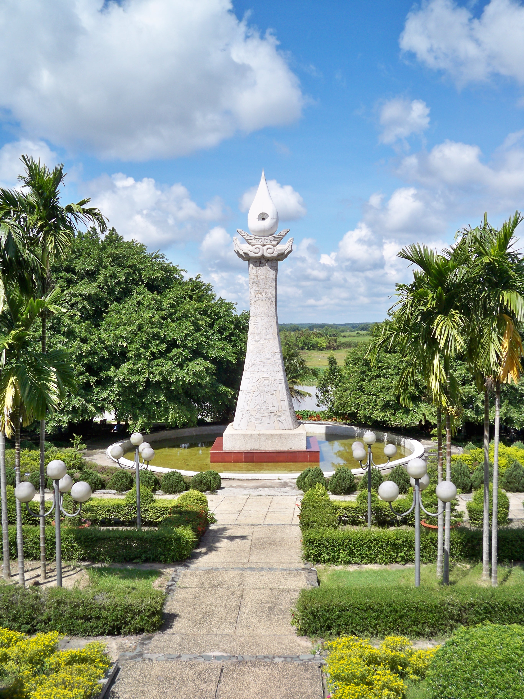

Địa đạo Củ Chi là một di tích lịch sử quốc gia nổi tiếng ở Việt Nam. Được mệnh danh là “thành phố dưới lòng đất”, Địa đạo Củ Chi nổi tiếng với hệ thống phòng thủ vững chắc và tinh vi được quân kháng chiến Việt Minh và Mặt trận Dân tộc Giải phóng miền Nam Việt Nam đào trong Chiến tranh Đông Dương và Chiến tranh Việt Nam. Hệ thống đường hầm không chỉ đóng vai trò là nơi trú ẩn mà còn là nơi sinh hoạt, hội họp quân sự, sơ cứu, chế tạo và cất giữ vũ khí. Địa đạo Củ Chi ngày nay đang phát triển không chỉ là một điểm đến lịch sử, văn hóa có giá trị mà còn là một địa điểm du lịch hấp dẫn gắn liền với các công trình quân sự nổi tiếng của Việt Nam. Nơi đây được coi là một trong sáu kỳ quan nhân tạo độc đáo nhất thế giới. Ngày nay, địa đạo đã được xếp hạng di tích lịch sử đặc biệt cấp quốc gia, là điểm đến thú vị thu hút đông đảo du khách trong nước và quốc tế đến tham quan, tìm hiểu về lịch sử chiến tranh của quân dân Việt Nam.

×